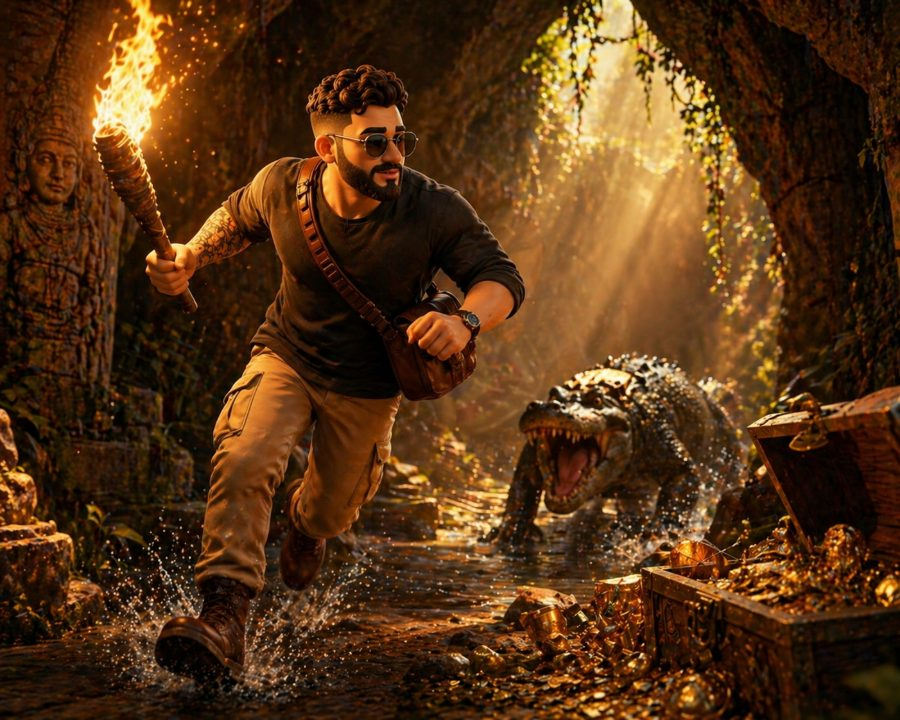
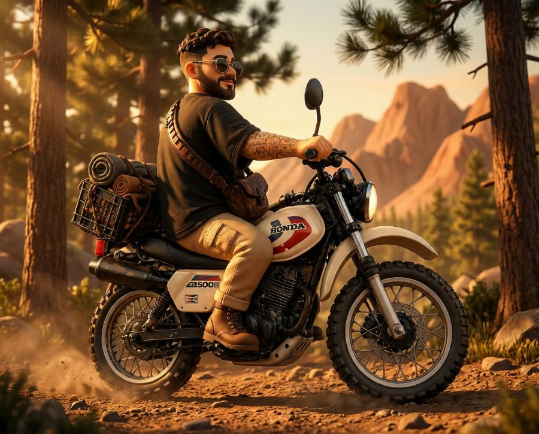

Founder Record · Digital Shiru
Ik ben Sil.
Ontwerper, illustrator
& digitale bouwer.
Visual Evidence · Field Archive

Expedition Log #03

51°20′N · 5°58′E
Ik ontwerp digitaal, maar denk op papier. Wat ik schets is soms een vorm, soms een compositie,
soms rechtstreeks op iemands huid. Later wordt het het fundament van
een interface, een merk of een campagne.
Ik volgde een grafische opleiding aan Niekée in Roermond en rondde daarna SintLucas
in Boxtel af. Sindsdien werk ik met uiteenlopende bedrijven aan creatieve projecten.
Op reis leerde ik culturen, vormen en stijlen kennen die nog altijd doorwerken in
mijn ontwerpen en tekenwerk.
Mijn beste ideeën ontstaan uit enthousiasme. Zodra ik over een project nadenk, komen
er meteen richtingen en mogelijkheden. Die werk ik eerst uit in woorden, schetsen en
tekeningen. Zo krijg ik overzicht en kan ik helder laten zien wat ik voor ogen heb.
Daarnaast tatoeëer ik freehand, wat me dwingt vorm en compositie direct en intuïtief
te vertalen.
Tegelijk kijk ik vooruit. Ik verdiep me al drie jaar actief in AI en werk met Claude
Code, Antigravity, Make, Midjourney en ChatGPT, niet om het nieuwe, maar om creatieve
en technische problemen op te lossen en processen slimmer in te richten.
Ik zoek voortdurend nieuwe invalshoeken en probeer methodes die er tijdens mijn
opleiding nog niet waren. Als de deadline nadert wordt er doorgepakt, maar het idee
blijft leidend.
“Ik geloof nog altijd dat sterke ideeën op papier ontstaan.”
Sil · Founder, Digital Shiru · MMXXIV
Social media
Short-form dat blijft hangen. Mijn best presterende TikToks, allemaal boven de 50K views, hoogste eerst. Tik op een video om af te spelen.